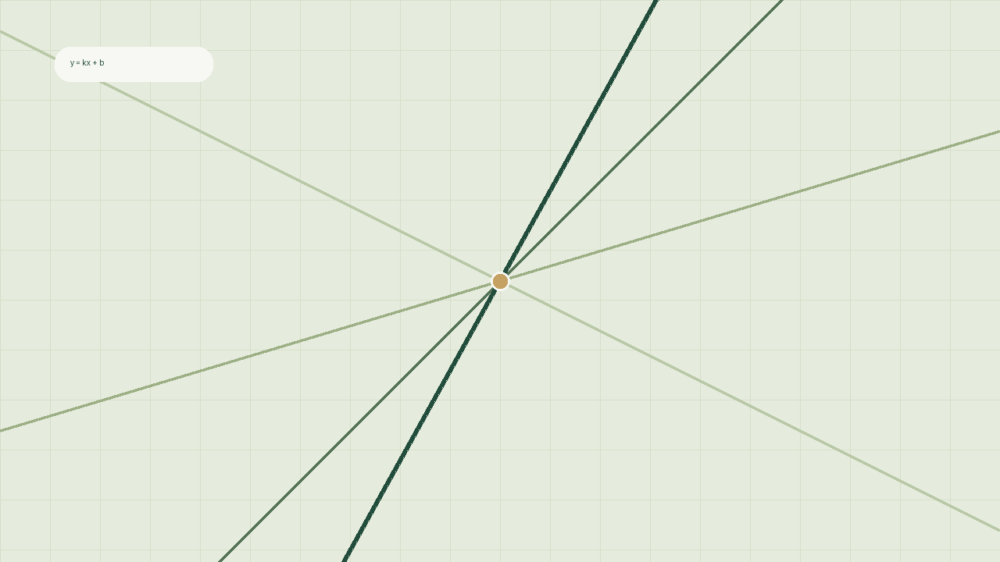

计划中
从直线到曲线
进一步认识非线性的变化。这一课还在准备中。
MATHEMATICS, MADE VISIBLE
从一条直线开始，亲手改变参数，观察函数如何回应。用两次小实验，让抽象的数学变得具体。

YOUR LEARNING PATH
认识斜率与截距，把公式和图像对应起来。
拖动参数，观察变化，并下载可复现的数据。
进一步认识非线性的变化。这一课还在准备中。
这是 Courseware 示例项目制作的规范示范课程。它演示了章节与课时关联、本地资源、交互实验和下载附件，所有内容可静态托管。